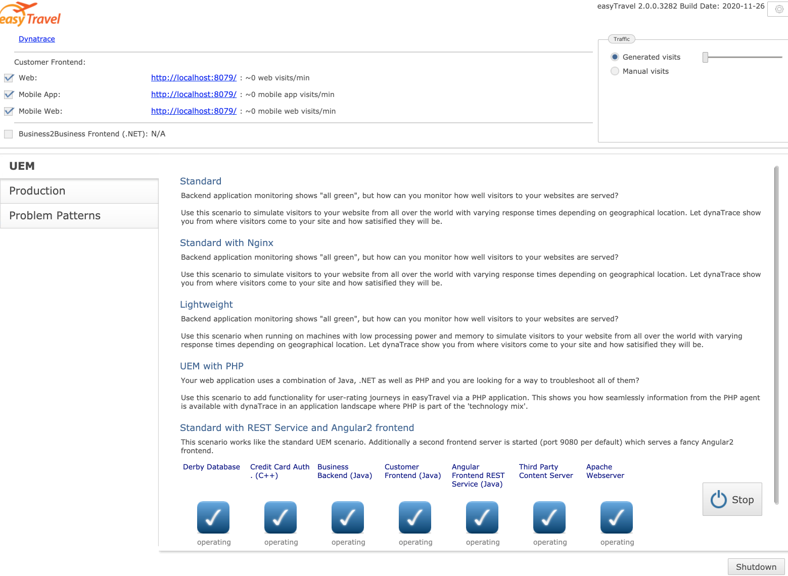
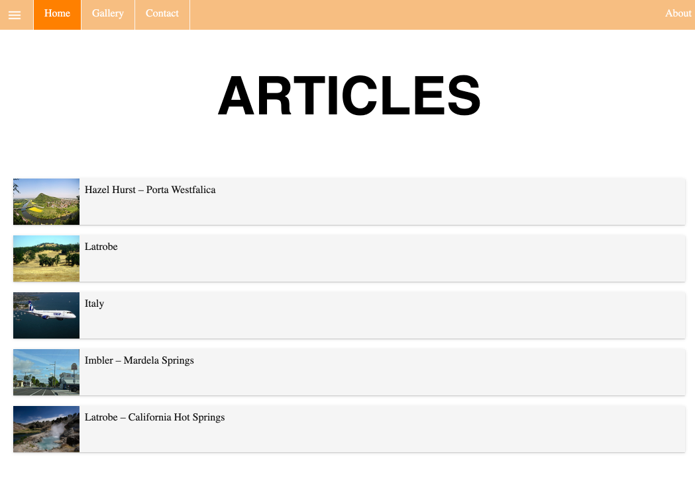
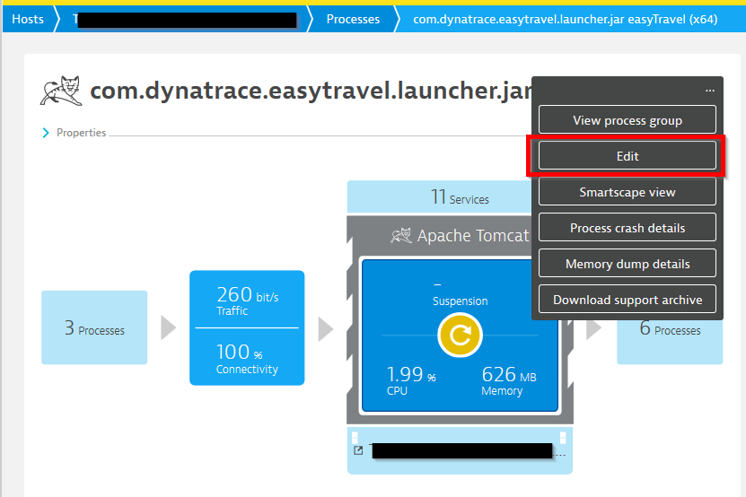
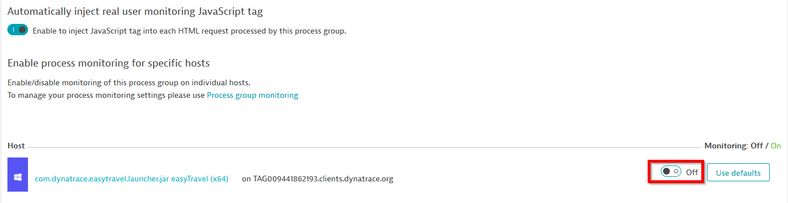

for learning, and playing around there is nothing better than having a separate VM that you can break. This can be either an instance in a cloud provider or a virtual machine @ localhost. On your working station you can use a docker container with an ubuntu image or https://multipass.run/. Multipass is a great way to instantiate Ubuntu VMs and runs on Linux, Mac and Windows. it's made by the Ubuntu team highly optimized.
Download multipass and install it depending on your OS https://multipass.run/
multipass -h
multipass launch --name <vm-name> --mem 4G --disk 10G --cpus 2
multipass start <vm-name>
multipass stop <vm-name>
multipass list
you can also shell into the vm with the ip but you need to set a password for the user ubuntu and enable password on the SSH service
multipass shell <vm-name>
multipass launch --name easytravel --mem 4G --disk 10G --cpus 2
multipass start easytravel
multipass shell easytravel
Download help script to install Easytravel, Nginx, Docker and other utils
wget https://raw.githubusercontent.com/sergiohinojosa/Dynatrace-REST-Tenant-Automation/master/aws/ubuntu-setup-easytravel.sh
sed -i 's/pipe_log=true/pipe_log=false/g' ubuntu-setup-easytravel.sh
## Set TENANT and API TOKEN
# ---- Define Dynatrace Environment ----
# Sample: https://{your-domain}/e/{your-environment-id} for managed or https://{your-environment-id}.live.dynatrace.com for SaaS
TENANT=
PAASTOKEN=
APITOKEN=
run the command as root for installing also utils as docker, in the VM you have a docker server where you can spin containers also easily. The script will install easytravel start it and it wll also install the BankJob (a java app for learning how the basline of Davis works) and an NGINX reverse proxy that routes the traffic of EasyTravel Angular to port 80.
sudo su;
sh ubuntu-setup-easytravel.sh;
This is optional just for you to know where the output of Easytravel is being piped out. Each Easytravel component writes is logs. You can check them on the Admin console of Easytravel
less +F /tmp/weblauncher.log
Docker is installed on the system. There are two running containers, one is a java app called "BankJob" another is nginx working as a reverse proxy for multiple endpoints of Easytravel
docker ps
docker stop reverseproxy bankjob
docker start reverseproxy bankjob
The load generation for EasyTravel is defined in the easyTravelConfig.properties file which is setted up during the installation. The properties starting with config.baseLoad.. are the ones defining these values (changed at installation). Also you can manage set this values manually by accessing the http://easytravel/admin interface and moving the slider manually.
🟡 UserActions for easyTravel Classic and Angular use different Load generators, the one for classic (older and embedded in the web launcher process) is detected by Dynatrace that are not real users and the Actions are displayed as requests (can be confirmed doing a backtrace from the Database). The load generator for Angular spins every time a chromium process and does a session based on a browser as you would. For fixing the UserActions for Classic just remove deep monitoring for the web launcher process.


killall java
If you happen to install easytravel as root, you might want to change recursively all the rights of the easytravel installation folder so all processes can run properly
sh /home/ubuntu/easytravel-2.0.0-x64/weblauncher/weblauncher.sh > /tmp/weblauncher.log 2>&1 &
chmod 755 -R /home/ubuntu/easytravel-2.0.0-x64/
chown ubuntu:ubuntu -R /home/ubuntu/easytravel-2.0.0-x64/
ps -aux | grep easy
sudo su;
killall java; docker start reverseproxy bankjob; USER=ubuntu; su -c "sh /home/$USER/easytravel-2.0.0-x64/weblauncher/weblauncher.sh > /tmp/weblauncher.log 2>&1 &" $USER
For RUM to work properly (for the classic app e.g. Loadgenerator) you need to disable deep monitoring for the weblauncher process.
On the entity select edit...

Then disable monitoring for that process group instance...

https://confluence.dynatrace.com/community/display/DL/easyTravel